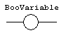
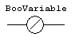
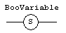
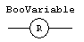

Coils are basic graphic elements of the LD language. A coil is associated to a boolean variable written upon its graphic symbol. A coil performs a change of the associated variable according to the rung state on its left side.
Below are the possible coil symbols and how they change the rung state:
|
Symbol |
State / Action |
Description |
|
 |
Normal |
The associated variable is forced to the value of the
rung state on the left of the coil.
|
|
 |
Negated |
The associated variable is forced to the negation of
the rung state on the left of the coil.
|
|
 |
Set |
The associated variable is forced to TRUE if the rung
state on the left is TRUE. (no action if the rung state is FALSE)
|
|
 |
Reset |
The associated variable is forced to FALSE if the rung state on the left is TRUE. (no action if the rung state is FALSE) |
When a contact or a coil is selected. You can press the SPACE bar to change its type (normal, negated, pulse...).
Even though coils are commonly connected to a power rail on the right, the rung may be continued after a coil. The rung state is never changed by a coil symbol.